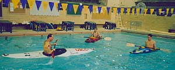

|
return to UKC index |
see also:
Informal instruction and practice sessions are held at the Hec Edmunsen pool most Sunday mornings during Autumn, Winter, and Spring Quarters. Separate evening practice sessions on Lake Washington for whitewater paddling and sea kayaking are sometimes conducted when daylight permits during these three quarters. During summer quarter, pool sessions move to Lake Washington.
Clinics in whitewater racing, whitewater rescue techniques, sea kayak rescue techniques, and sea kayak trip planning are scheduled according to interest. Most learning is done while on paddling trips, with experienced club members leading trips year round.
Please see the club announcements for trip and other instruction times.
The club maintains a library of books and videos. A considerable amount of kayaking information is available on-line as well. Kent Ford's eSchool is one great source of information. Visit the club's library for more information.
We also have some video clips to illustrate basic paddling skills.
Pool sessions are an excellent opportunity for all kayakers to develop skills in the comfort of a heated swimming pool. Pool sessions are typically run by a few advanced paddlers who teach skills, such as edging and bracing, to less experienced paddlers. These sessions are a great opportunity to improve your kayaking ability and meet other club members.
To attend a pool session meet at the WAC at 8:30AM Sunday mornings to load boats and other equipment. The sessions proper are held at the Hec Edmundson Pool from 9:00 to 11:00, and usually end around 11:30 after all the equipment has been transported back to the WAC. Parking is available at the WAC or the Montlake Lot north of the IMA. Priority is given to people who help with the transportation and cleaning of boats prior to the pool session. As the number of boats taken is to pool sessions usually matches the number of people who arrive at 8:30 to help load equipment, you may not get into a boat if you are late.
It is a good idea to bring a shirt that you do not mind getting wet, which will help keep you warmer in the water. Goggles and noseplugs are also popular, as they keep water out of your eyes and sinuses, making learning hip snaps, bow rescues, bracing, and rolls more pleasant.
Note: pool sessions are not held during final exam weeks or breaks. Pool sessions are also occasionally cancelled due to special events which make accessing the WAC difficult. During the summer, practice sessions are held on Lake Washington instead.
If you're familiar with how pool sessions go and would like to help support the kayak club, click here for information on how to lead a pool session.
 UKC members also schedule occasional practice sessions for river and sea
kayak rescue techniques. These will be announced
when available.
UKC members also schedule occasional practice sessions for river and sea
kayak rescue techniques. These will be announced
when available.
If you are interested in learning rescue skills, contact the whitewater or sea kayak tzar, as appropriate, via the club officers list.
Note that successful completion of a sea kayak rescue course is required prior to participating in club sea kayaking trips on Puget Sound or other areas outside of the lake membership paddling area. A sea rescue course is strongly recommended for taking sea kayaks out on the lakes as well, as having an understanding of how to get back into a boat after accidentally capsizing makes trips in rough water or substantial wind much safer.
| Instruction / UKC Webmasters ukc-web@u.washington.edu | last updated: 2002.11.19 |